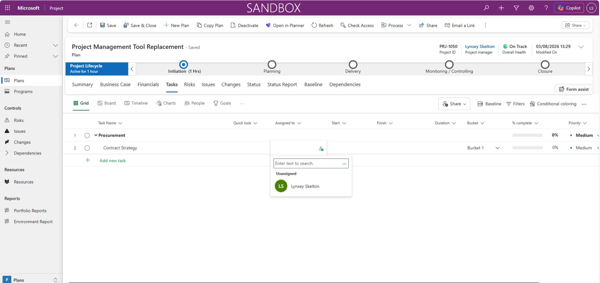
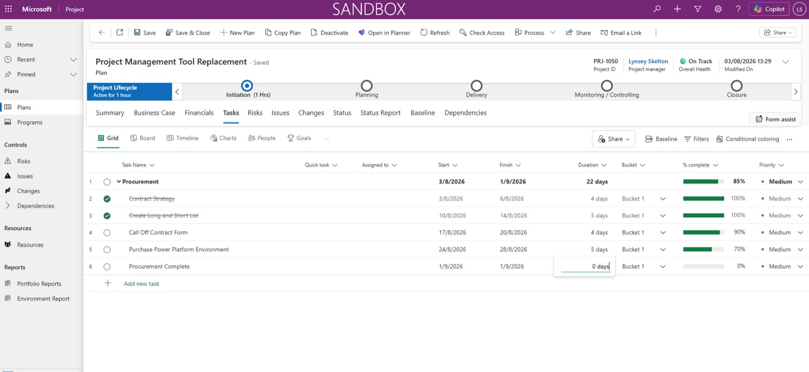
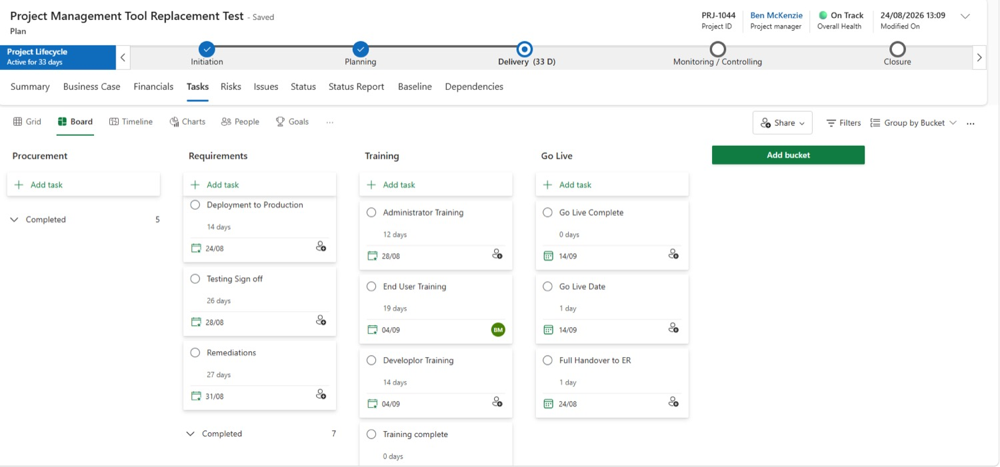
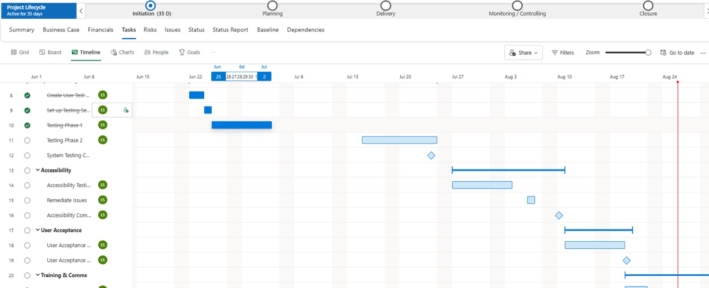

Run the project
Tasks & milestones
Your schedule records the work, captures the milestones, and shows whether you're on track to hit your deadlines. In Project Hub it runs in Microsoft Planner — easier to add to, edit and assign than PWA, with several ways to look at it.
How a schedule is shaped
Just like in PWA, break your schedule down by phase. Each phase is a parent task; the work inside it is subtasks; the key moments are critical milestones.
Example schedule. Phases are parent tasks, the work sits under them, and diamonds mark critical milestones.
Build your schedule
Open your plan and select the Tasks tab. You'll land on a Planner grid.
- Select + Add new task and name it after your first project phase.
- Select + Add new task again and name it as the first piece of work in that phase.
- On that new task, select the ··· three dots and choose Make subtask. It tucks in under the phase.
- Keep adding subtasks the same way, then fill in their details (below).
What goes on each task
- 1Assigned to — select the blank box and search for a name.
- 2Start and Finish — type a date, or pick one from the calendar icon.
- 3Duration — worked out for you from the dates, weekends excluded.
- 4% complete — enter a percentage, and keep it updated as work progresses.
- 5Priority — choose from the dropdown. You decide, as project manager.
See the real screen — tasks in the Planner grid

Critical milestones
A critical milestone is a task with zero duration that marks an important point in the project. They work the same way as in PWA, and they're what the Power BI reports use to show your progress to the programme board.
Task vs. milestone on a timeline
- Add a new task in the subtask list and give it the milestone's name.
- Select the date the milestone should be completed.
- Manually set Duration to 0 days.
See the real screen — a milestone with 0 days duration

Start the next phase
When a phase's subtasks are all in, start a new section for the next phase. New tasks land inside the current phase, so you promote the new phase back out.
- Add a new task and name it after your next project phase. Add another task below it for that phase's first piece of work.
- Select the ··· three dots on the new phase task and choose Promote subtask.
Remember the pairMake subtask moves a task in under the one above. Promote subtask moves it back out to become a parent.
Ways to view your tasks
Same tasks, different lenses. Switch views from the toolbar above your schedule.
Grid
The default list. Where you add and edit tasks.
Board
Cards in columns by status, bucket or another field. Drag tasks across as work moves; spot blockers fast. Use Add bucket to group tasks.
Timeline
A Gantt-style view. The diamonds are your critical milestones.
Charts
How tasks are spread by status, bucket, or who they're assigned to.
People
How many tasks are due from each team member.
Goals
+ Add goal, name it, then + Add new task or Connect tasks to link existing work to it.
See the real screen — Board view

See the real screen — Timeline view with milestone diamonds

Get more confident with Planner
The M365 Task Management (Planner) workshop covers managing team and personal tasks, assigning actions, tracking progress and more.
Find it in the Course Catalogue ↗, or book your place through iTrent.